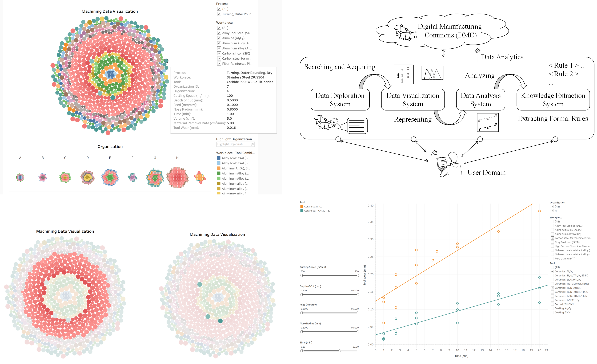
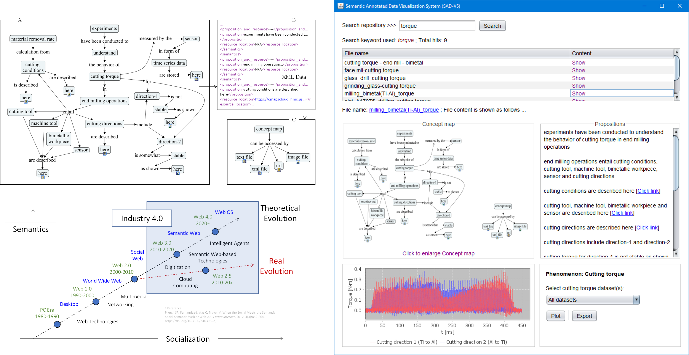
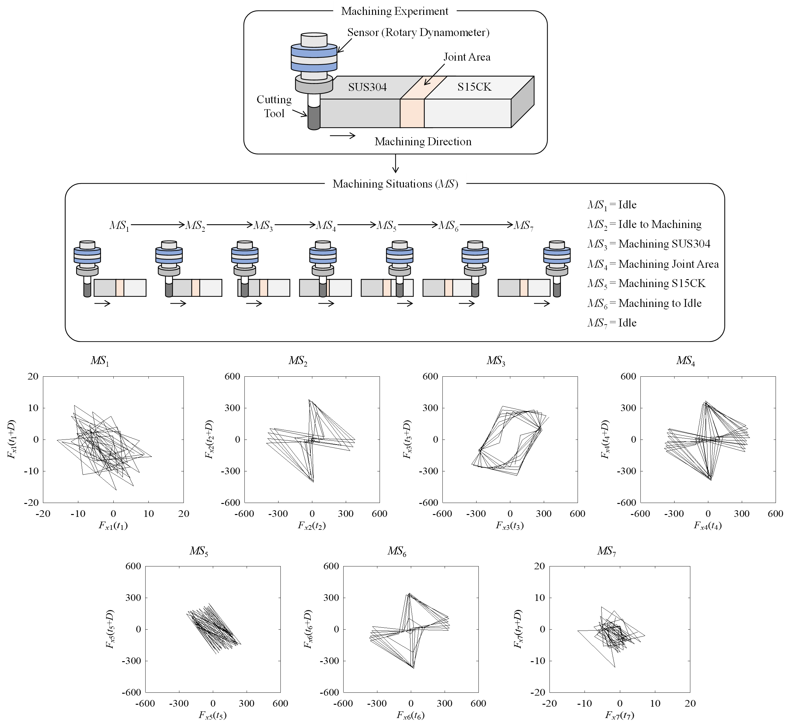

Research on open data and relevant analytics
Traditionally, data-driven manufacturing relies on localized, proprietary datasets that limit collaboration and innovation. By contrast, an open-data approach—much like GenBank in the biological sciences—brings together diverse, freely accessible manufacturing data from multiple sources. These data then become part of a larger, interconnected ecosystem known as the Digital Manufacturing Commons (DMC)—a shared infrastructure where various manufacturing assets (e.g., process-relevant data, CAD models, algorithms, and alike) are openly available for analysis and application across different workspaces. This broader accessibility empowers research across organizations, including smaller enterprises, and drives collaborative problem-solving. Our research examines how to structure and integrate these heterogeneous datasets, adapt existing analysis methods to handle their variability, and ensure that resulting insights remain actionable despite increased uncertainty. Through this step-by-step exploration, we aim to foster a more transparent, inclusive, and data-rich manufacturing ecosystem.
Research on sensor signal-based digital twins
Digital twins (Object, Process, and Phenomenon twins) are needed for virtualizing a real-life manufacturing process and functionalizing high-level cognitive tasks (monitoring, understanding, predicting, decision-making, and adapting). Our research team is working on developing phenomena twins, using historic phenomena-relevant sensor signal datasets (e.g., cutting force, cutting torque, and alike). Two computerized systems: Digital Twin Construction System (DTCS) and Digital Twin Adaptation System (DTAS), are developed for constructing and adapting the twins, respectfully. The DTCS acquires the relevant datasets from cloud, machine learns the knowledge underlying the datasets, simulates the relevant phenomenon, and validates the simulation outcomes. On the other hand, the DTAS adapts the validated outcomes for real-time monitoring.

Research on semantic annotation and knowledge representation
In smart manufacturing, various manufacturing enablers, such as machine tools, monitoring systems, digital twins, and others, require knowledge to perform high-level cognitive tasks like monitoring, understanding, predicting, decision-making, and adapting. This knowledge is supplied by the ever-growing knowledge-bases in human-cyber-physical systems. To be effective, the knowledge in these bases must be human/machine-comprehensible and represented using a scalable ontology-based method. In reality, representation methods are often domain-specific and follow strict ontological formalism. Our research team addresses this issue by proposing a semantic annotation-based representation method. This annotation mechanism utilizes knowledge-type-aware concept mapping, allowing for a more versatile approach. As part of our efforts, we have developed a computerized system known as the Semantically Annotated Data Visualization System (SAD-VS). This system ensures both human and machine comprehensibility of the represented knowledge.
Research on signal processing in delay domain
In smart manufacturing, embedded systems such as CNC machine tools, programable logic controllers, digital measuring instruments, cyber-physical systems, and digital twins, collectively perform high-level cognitive tasks (monitoring, understanding, predicting, decision-making, and adapting) by making sense of sensor signals. When sensor signals are exchanged through the abovementioned embedded systems, a phenomenon called time latency or delay occurs. As a result, the signal at its origin (e.g., machine tools) and signal received at the receiver end (e.g., digital twin) differ. The time and frequency domain-based conventional signal processing cannot adequately address the delay-centric issues. Instead, these issues can be addressed by the delay domain. As such, real-life signals collected while machining different materials are analyzed using frequency and delay domains to reconfirm its (delay domain) significance in real-life settings. In both cases, it is found that the delay domain is more informative and reliable than the time and frequency domains when the delay is unavoidable. Moreover, the delay domain can act as a signature of a machining situation, distinguishing it (the situation) from others. The findings of this study reveal that computational arrangements enabling delay domain-based signal processing must be enacted to effectively functionalize the smart manufacturing-centric embedded systems.

If you’re interested in collaborating or have any inquiries,
feel free to email me directly.